Problèmes et recos
35 fiches. Chacune : symptôme, preuve (capture annotée ou mesure), cause dans le code, impact, règle citée, options avec leurs pour et contre, choix argumenté, spécification avant → après, critères d'acceptation. Les chemins sont relatifs à Sources/CallRecorder/ sauf mention.
Sommaire des fiches
- P01 · Le texte tertiaire est illisible : 1,88:1 en clair, 2,28:1 en sombre
- P02 · Le texte secondaire est à 3,9:1 partout, et 3,7:1 sur la ligne choisie
- P03 · Le rouge « En cours » tombe à 4,2:1 en sombre, et colore toute la ligne
- P04 · 14 contrôles sur 22 sous 28 pt, 5 sous 20 pt
- P05 · VoiceOver : 5 boutons d'icône sans nom, 7 zones cliquables qui ne sont pas des boutons
- P06 · Le contour du jour courant, dans le calendrier, est à 2,1:1
- P07 · Trois formes d'état vide pour la même place, et un message dit deux fois
- P08 · Les avertissements n'ont pas de couleur : triangles gris, Palette.warning absent des Réglages
- P09 · La carte « Claude relit » : trois indicateurs, une barre grise, une ligne de mécanisme
- P10 · Le chrono s'écrit de trois façons, et « 72:05 » après une heure
- P11 · Pendant un enregistrement, un squelette de chargement promet un texte qui ne vient pas
- P12 · La pastille du bas affiche « v1 », « v2 »
- P13 · Cinq façons de dessiner la vignette d'une ligne
- P14 · Le bouton des notes, en haut à droite, ne se lit pas
- P15 · Le bas de la liste coupe un en-tête de jour
- P16 · Un titre par défaut grisé se lit comme une ligne éteinte
- P17 · Le calendrier marque un jour deux fois (gras et point)
- P18 · Liste et Calendrier : deux boutons au lieu d'un contrôle segmenté
- P19 · Deux trous de 24 pt dans les Réglages, dus à des piles vides
- P20 · Accueil des Réglages : symboles au trait bleus, « Groupes » en square.stack, « Paramètres » dans « Réglages »
- P21 · « Base de données externe » ne contient que des « Copies »
- P22 · Téléphones : des ronds bleus cochés qui ne sont ni interrupteurs ni cases
- P23 · La consigne pour un autre agent : un chemin en police de texte
- P24 · Une date numérique, la seule de l'app : « Du 03/11 au 10/11 »
- P25 · Copier a deux icônes ; la barre du bas a trois ronds séparés
- P26 · Le temps du lecteur : « 00:00 / 34:00 »
- P27 · Le système dérive : 43 combinaisons de police, 26 tailles en dur, 87 espacements et 43 opacités hors système
- P28 · Des composants en double
- P29 · Ponctuation française : 145 espaces sécables avant « : ? ! », 28 après « « »
- P30 · En sombre, 16 couleurs fixes ne suivent pas
- P31 · L'icône de l'app ne remplit pas le gabarit de macOS 26
- P32 · Pastille volante : deux rouges ; « CallRecorder » visible 19 fois
- P33 · Une notification titrée « CallRecorder », terminée par une question
- P34 · Notes : un « + » flottant à la manière d'Android, quatre ronds bleus, une citation coupée sans « … »
- P35 · Visionneuse : trois fois « 15:48 », un fond gris rectangulaire, un lien souligné
Lot A · Lisibilité et accessibilité
P01 · Le texte tertiaire est illisible : 1,88:1 en clair, 2,28:1 en sombre
GêneEffort : 30 minLot A · Lisibilité et accessibilitéPage Groupes (nombres, « Glissez ici des conversations de la liste »), en-têtes de piles- Symptôme
- Les nombres de conversations à côté de chaque groupe (« 1 », « 0 », « 3 », « 12 ») et la consigne du groupe vide sont en
.tertiary, gris très pâle. - Preuve
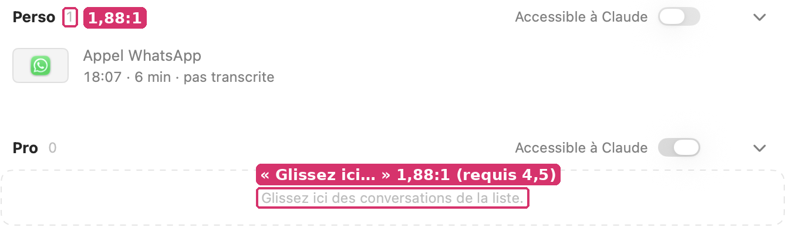
Mesure (mesures-contrastes.csv) : tertiaire sur blanc 1,88:1 (Lc 35,8) ; en sombre 2,28:1 (Lc 14,8). Seuil WCAG pour du texte de 11-12 pt : 4,5:1. Pixel relevé sur
groupes.webp: #BDBDBD sur #FFFFFF.- Cause
GroupsView.swift:372et:694(nombre en.tertiary),:443(consigne du groupe vide en.tertiary),:695(chevron).- Impact
- Chaque ouverture de la page Groupes : un nombre par groupe (4 dans le corpus fictif). La consigne n'apparaît que pour un groupe vide, au moment précis où l'on a besoin de la lire.
- Règle
- WCAG 2.2, 1.4.3 Contraste (minimum) : 4,5:1 pour le texte ; HIG, Color : les niveaux de label (primaire à quaternaire) hiérarchisent l'importance ; le tertiaire convient à ce qui peut ne pas être lu, pas à un nombre ou une consigne.
- Options
- OptionPourContrePasser en
.secondary3,98:1, au niveau du reste de l'app ; une ligne par usageToujours sous 4,5 (voir P02)Passer en.primarypour la consigne,.secondarypour le nombreLa consigne devient lisible (15:1)La consigne prend plus de poids qu'un état videGarder le tertiaireAucun travailIllisible (1,88:1) - Choix
- Option 1 pour le nombre et le chevron, et la consigne en
.secondaryaussi : c'est un état vide, pas un contenu. Le tertiaire reste réservé à ce qui n'a pas à être lu (les séparateurs « · »). - Spécification
Où Avant Après GroupsView.swift:372.foregroundStyle(.tertiary).foregroundStyle(.secondary)GroupsView.swift:443.font(.callout).foregroundStyle(.tertiary).font(.callout).foregroundStyle(.secondary)GroupsView.swift:694-695.foregroundStyle(.tertiary).foregroundStyle(.secondary)- Acceptation
- Aucun
Texten.tertiarydansGroupsView.swift(grep -n 'Text(.*tertiary' GroupsView.swiftne rend rien). - Sur une capture claire de la page Groupes, le pixel le plus sombre du nombre « 12 » est ≤ #808080.
- Aucun
P02 · Le texte secondaire est à 3,9:1 partout, et 3,7:1 sur la ligne choisie
DétailEffort : 15 minLot A · Lisibilité et accessibilitéToutes : sous-titres de la liste, en-têtes de jour, heures des répliques, détails des Réglages, pieds de groupe- Symptôme
- Les métadonnées (heure, durée, personnes) et les détails sont en
.secondary(noir à 0,50). Sur la colonne (#F7F7F7), c'est 3,92:1 ; sur la ligne choisie (#DCDCDC), 3,72:1. - Preuve
Mesures : 8 couples sur 8 en
.secondarysont sous 4,5:1 en clair (3,72 à 3,98:1). En sombre, ils passent (5,4 à 5,9:1), sauf sur la ligne choisie (4,43:1). Pixels relevés : #6E6E6E à #808080 pour le texte, #F7F7F7 et #DCDCDC pour les fonds. Voir mesures-contrastes.csv.- Cause
- C'est la couleur du système (
secondaryLabelColor), employée comme le veut DESIGN.md. La ligne choisie l'aggrave : son fondChosen.fill(0,12) assombrit sans éclaircir le texte. - Impact
- Chaque ligne de la liste, chaque réplique, chaque réglage : c'est la moitié du texte de l'app. Les personnes qui lisent mal les gris clairs (presbytie, écran en plein jour) le lisent avec effort.
- Règle
- WCAG 2.2, 1.4.3 Contraste (minimum) ; HIG, Accessibility › Color and effects : préférer les couleurs système, qui se renforcent avec « Augmenter le contraste ».
- Options
- OptionPourContreGarder le gris systèmeFamilier : Mail, Notes et Réglages Système ont exactement ce gris ; « Augmenter le contraste » l'assombrit tout seul3,9:1 reste sous WCAG AAUn gris maison plus sombre (noir à 0,62, 4,6:1)Passe WCAG AASort de « une app du système » ; deux gris à maintenir, en clair et en sombreLe texte important en
.primary(l'heure d'une ligne), le reste en secondaireLa donnée qu'on cherche se lit ; reste systèmeUn peu plus de poids dans la liste - Choix
- Option 1, assumée et écrite dans DESIGN.md : c'est le gris de Mail et de Notes, et « Augmenter le contraste » le porte au-dessus de 4,5:1. Pas de gris maison. L'option 3 n'est retenue nulle part : l'heure d'une ligne n'est pas plus importante que son titre. (La sélection en accent, comme les listes de Mail, ne règle rien : blanc sur accent = 4,07:1.)
- Spécification
Où Avant Après DESIGN.md › Couleurs—« Le secondaire est celui du système : 3,9:1 sur la colonne claire, 5,4:1 en sombre. Gardé pour la familiarité ; « Augmenter le contraste » le renforce. Rien d'important ne s'écrit seulement en secondaire. »- Acceptation
- DESIGN.md dit le contraste du secondaire et pourquoi il est gardé.
- Aucune information qui commande une action (un état d'erreur, une consigne) n'est seulement en secondaire.
P03 · Le rouge « En cours » tombe à 4,2:1 en sombre, et colore toute la ligne
GêneEffort : 30 minLot A · Lisibilité et accessibilitéListe, ligne de l'appel en cours ; carte d'enregistrement- Symptôme
- « 22:55 · ● En cours · 12 min » : l'heure, le point, le mot et la durée sont en
Palette.live. En sombre,Palette.liveprendsystemRed(#FF453A). - Preuve
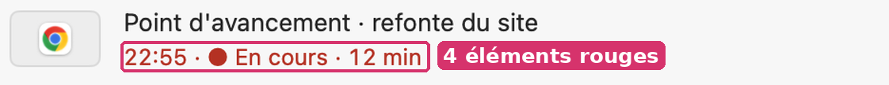
Mesures : en clair 5,53:1 (passe) ; en sombre 4,21:1 sur la colonne, 4,35:1 sur une carte (seuil 4,5). DESIGN.md affirme que
Palette« tient 4,5:1 en petit » : vrai en clair seulement.- Cause
Accessibility.swift:45(dark: .systemRed) ;CallCard.swift:209-212(toute la chaînetime + "● En cours · " + duréedans un seulTextrouge).- Impact
- Pendant chaque enregistrement, en mode sombre (le réglage d'une bonne part des utilisateurs du Mac le soir).
- Règle
- WCAG 2.2, 1.4.3 Contraste (minimum) ; HIG, Color : la couleur porte un sens ; l'employer avec retenue pour qu'il reste lisible.
- Options
- OptionPourContreUn rouge sombre maison clair, et en sombre un rouge éclairci (#FF6961, 5,3:1)Passe en sombreUne valeur de plus à tenirSeuls le point et « En cours » en rouge, le reste en secondaireLe signal se concentre ; moins de texte rouge à lireNe règle pas à lui seul le 4,2:1 du motLes deuxPasse, et le signal est net—
- Choix
- Option 3. En sombre,
Palette.live= #FF6961 (systemRedéclairci : 5,09:1 sur la colonne #2A2A2A, 4,75:1 sur une carte, mesurés par la même formule) ; et la chaîne coupée en troisText: heure secondaire, « ● En cours » rouge, chrono secondaire (voir P19). - Spécification
Où Avant Après Accessibility.swift:45dark: .systemReddark: NSColor(srgbRed: 1, green: 0x69/255, blue: 0x61/255, alpha: 1)CallCard.swift:211Text(time + "● En cours · " + CLI.duration(m.duration)).foregroundStyle(Palette.live)Text(time).foregroundStyle(.secondary) + Text("● En cours").foregroundStyle(Palette.live) + Text(" · " + chrono).foregroundStyle(.secondary)- Acceptation
mesures.pyrelancé avec la nouvelle valeur : « Palette.live / colonne / sombre » ≥ 4,5:1.- Sur la ligne en cours, seuls « ● En cours » sont rouges (capture claire et sombre).
P04 · 14 contrôles sur 22 sous 28 pt, 5 sous 20 pt
GêneEffort : 3 hLot A · Lisibilité et accessibilitéLecteur, fenêtre d'un appel, recherche, Groupes, Réglages, Notes- Symptôme
- Le chevron qui déplie le lecteur fait 11×7 pt ; celui de « Taille, corbeille » 10×10 ; « Arrêter cette copie » (moins) 15×15 ; les interrupteurs mini 36×17 ; les filtres de groupe 23 pt de haut ; les boutons ⋯ et Copier d'une note 24×24.
- Preuve
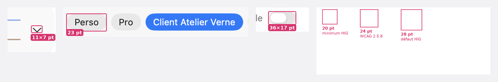
Relevé contrôle par contrôle, dans le code et au pixel : mesures-cibles.csv. Sous 28 pt (défaut d'Apple) : 14 sur 22. Sous 24 pt (WCAG 2.5.8) : 10. Sous 20 pt (minimum d'Apple) : 5 (chevron du lecteur, chevron « Taille, corbeille », moins, et les deux interrupteurs mini en hauteur).
- Cause
- Des symboles posés sans cadre (
CallWindow.swift:183en.caption2,Onboarding.swift:509),.controlSize(.mini)sur des interrupteurs (GroupsView.swift:382,Onboarding.swift:699),MoreButton.size = 24(Style.swift:62), la pastille de filtre en padding 4 (GroupsView.swift:185). - Impact
- À chaque usage de ces contrôles, au trackpad ; davantage pour qui a la main moins sûre. Le chevron du lecteur est dans chaque conversation.
- Règle
- HIG, Accessibility › Buttons and controls : sur macOS, 28×28 pt par défaut, 20×20 pt au minimum ; WCAG 2.2, 2.5.8 Taille de la cible (minimum) : 24×24 px
- Options
- OptionPourContreAgrandir la zone cliquable, pas le dessin (
.frame(28, 28).contentShape)Rien ne change à l'œil ; la cible passeLes zones peuvent se chevaucher dans les rangées serréesPasser les contrôles à.controlSize(.small)ou.regularSystèmeLes interrupteurs grandissent visiblementGarder—5 contrôles sous le minimum d'Apple - Choix
- Option 1 pour les symboles (chevrons, moins, ⋯ :
MoreButton.sizepasse à 28) ; option 2 pour les interrupteurs (.small, la taille de Réglages Système) ; la pastille de filtre en padding vertical 6 (27 pt). - Spécification
Où Avant Après Style.swift:62static let size: CGFloat = 24static let size: CGFloat = 28CallWindow.swift:183Image(systemName: "chevron.down").font(.caption2.weight(.semibold))… .frame(width: 28, height: 28).contentShape(Rectangle())Onboarding.swift:509label: { Image(systemName: "minus.circle") }label: { Image(systemName: "minus.circle").frame(width: 28, height: 28).contentShape(Circle()) }GroupsView.swift:382, Onboarding.swift:699.controlSize(.mini).controlSize(.small)GroupsView.swift:185.padding(.horizontal, 10).padding(.vertical, 4).padding(.horizontal, 10).padding(.vertical, 6)Lecteur (chevron, TranscriptReader)symbole seulcadre 28×28, contentShape- Acceptation
mesures-cibles.csvrefait : plus aucune ligne sous 20 pt ; au plus 3 sous 28 pt (celles des rangées serrées, justifiées).- Aucun
.controlSize(.mini)sur unToggle.
P05 · VoiceOver : 5 boutons d'icône sans nom, 7 zones cliquables qui ne sont pas des boutons
GêneEffort : 2 hLot A · Lisibilité et accessibilitéNotes (Copier), lecteur (Lecture), Réglages (moins, fermer le guide), Groupes, Espace occupé- Symptôme
- Des boutons dont l'étiquette est un symbole seul n'ont pas d'
accessibilityLabel; des vues réagissent au clic par.onTapGesturesans être des boutons. - Preuve
Relevé : mesures-accessibilite.csv. Boutons d'icône sans
accessibilityLabel:NotesPane.swift:126et:236(Copier, ni nom ni aide),TranscriptReader.swift:1963(PlayButton: ni nom ni aide),Onboarding.swift:509etSettingsGuide.swift:105(une aide, pas de nom)..onTapGesture: 7, dont 5 sans nom ni trait de bouton (StoragePages.swift:147,SettingsParts.swift:172,GroupsView.swift:369,:436,:555).- Cause
- SwiftUI nomme un
Image(systemName:)d'après le symbole (« clipboard » se lit « presse-papiers »), et.helpdevient une indication, pas un nom. Un.onTapGesturen'est ni focalisable au clavier ni annoncé comme bouton. - Impact
- Personnes qui utilisent VoiceOver ou le clavier seul (Accès complet au clavier) : ces 12 contrôles sont muets ou inatteignables.
- Règle
- WCAG 2.2, 4.1.2 Nom, rôle et valeur ; WCAG 2.2, 2.1.1 Clavier ; HIG, Accessibility › VoiceOver : « donner un libellé à chaque élément d'interface ».
- Options
- OptionPourContreAjouter
.accessibilityLabelet remplacer les.onTapGesturepar desButton(.plain)Nom, rôle et clavier d'un coupRevoir 7 vuesSeulement.accessibilityAddTraits(.isButton)sur les zonesRapideToujours pas atteignable au clavier - Choix
- Option 1. Le
PlayButtonprend « Lecture » / « Pause » ; Copier prend « Copier la note ». - Spécification
Où Avant Après TranscriptReader.swift:1963Button(action: action) { Image(… "play.fill") … }… .accessibilityLabel(playing ? "Pause" : "Lecture")NotesPane.swift:126, :236Image(systemName: copied == … ? "checkmark" : "clipboard")… .accessibilityLabel("Copier la note").help("Copier la note")Onboarding.swift:509.help("Arrêter cette copie…")+ .accessibilityLabel("Arrêter cette copie")SettingsGuide.swift:105.help("Fermer")+ .accessibilityLabel("Fermer")StoragePages.swift:147, SettingsParts.swift:172, GroupsView.swift:369, 436, 555.onTapGesture { … }Button { … } label: { … }.buttonStyle(.plain)- Acceptation
mesures.py: « boutons_icone_sans_label » = 0 et « ontap » sans nom = 0.- Avec VoiceOver, chaque bouton des Notes et du lecteur s'annonce « Lecture, bouton » / « Copier la note, bouton ».
P06 · Le contour du jour courant, dans le calendrier, est à 2,1:1
DétailEffort : 15 minLot A · Lisibilité et accessibilitéCalendrier de la colonne- Symptôme
- Le jour courant (quand il n'est pas choisi) est signalé par un contour en secondaire à 0,6.
- Preuve
Mesure : 2,10:1 en clair, 2,91:1 en sombre, pour un élément non textuel qui doit tenir 3:1. Code :
DotCalendar.swift:102.- Cause
DotCalendar.swift:102:strokeBorder(Color.secondary.opacity(0.6)).- Impact
- Chaque fois que le jour courant n'est pas celui choisi : on ne voit pas « aujourd'hui ».
- Règle
- WCAG 2.2, 1.4.11 Contraste du non-textuel : 3:1
- Options
- OptionPourContreContour en accent (3,8:1 sur la colonne claire, 3,9:1 en sombre)Passe 3:1 ; le langage de Calendrier, où aujourd'hui porte la couleur—Le chiffre en accent, sans contourComme CalendrierLe chiffre devient du texte en accent : 3,8:1, sous les 4,5:1 du texte
- Choix
- Option 1 : contour d'1 pt en accent, chiffre en
.primarysemi-gras. - Spécification
Où Avant Après DotCalendar.swift:102strokeBorder(Color.secondary.opacity(0.6))strokeBorder(Color.accentColor)- Acceptation
- Le contour du jour courant tient ≥ 3:1 sur la colonne, en clair et en sombre (mesures.py).
Lot B · États et signaux
P07 · Trois formes d'état vide pour la même place, et un message dit deux fois
GêneEffort : 1 hLot B · États et signauxPanneau de droite : rien de choisi, aucune conversation, rien enregistré, audio à la corbeille- Symptôme
- « Aucune conversation sélectionnée » : grand titre gras sur deux lignes, un combiné. « Rien à lire » : le même gabarit, une phrase et un bouton. Rien d'enregistré : un bandeau (« Le micro n'a rien enregistré. ») et une phrase grise au centre (« Rien n'a été enregistré : aucun son n'est arrivé. »).
- Preuve
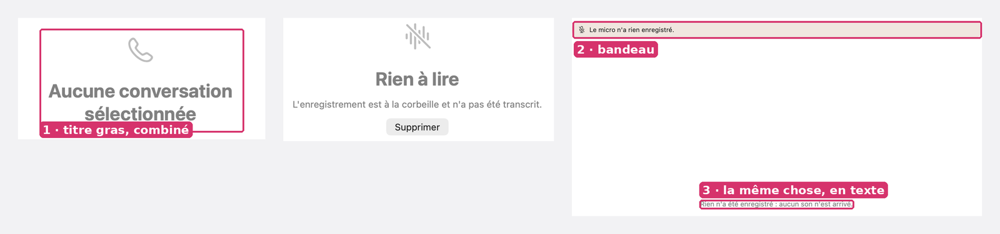
- Cause
EmptyCalls.swift:65-78(ContentUnavailableView+systemImage: "phone") ;CallsWindow.swift:233-237;TranscriptReader.swift:1071-1077(bandeau) et:1441(phrase), affichés ensemble quand le micro est muet et l'audio vide.- Impact
- « Aucune conversation sélectionnée » est l'écran de chaque ouverture de la fenêtre. Le double message, à chaque appel raté.
- Règle
- HIG, Writing : ne pas répéter la même information dans une vue ; convention de Mail : « Aucun message sélectionné », texte seul, sans icône, en gris. Le combiné contredit TEXTES.md (« Appel : un vrai appel, et rien d'autre »).
- Options
- OptionPourContreUne seule forme :
ContentUnavailableView, trois réglagesSystème ; un seul composant—Le style de Mail pour « rien de choisi » (texte seul)Calme, l'état le plus fréquent ne crie pasDifférent des deux autres : assumé, ce n'est pas un problèmeGarder—Trois styles, un message en double - Choix
- Options 1 et 2 : rien de choisi = titre seul en
.title3secondaire, sans icône ; rien enregistré =ContentUnavailableView« Rien n'a été enregistré »,mic.slash, la cause en description, sans bandeau ; audio à la corbeille : inchangé. - Spécification
Où Avant Après EmptyCalls.swift:78ContentUnavailableView("Aucune conversation sélectionnée", systemImage: "phone")Text("Aucune conversation sélectionnée").font(.title3).foregroundStyle(.secondary)EmptyCalls.swift:65, :76systemImage: "phone"systemImage: "bubble.left.and.text.bubble.right"TranscriptReader.swift:1071if micSilent { Label("Le micro n'a rien enregistré.") … }if micSilent && !emptyAudio { … }TranscriptReader.swift:1441Text("Rien n'a été enregistré : aucun son n'est arrivé.")ContentUnavailableView("Rien n'a été enregistré", systemImage: "mic.slash", description: Text("Aucun son n'est arrivé du micro."))- Acceptation
- Aucune vue n'affiche à la fois le bandeau du micro et la phrase « Rien n'a été enregistré ».
- Le symbole
phonen'apparaît plus dansEmptyCalls.swift.
P08 · Les avertissements n'ont pas de couleur : triangles gris, Palette.warning absent des Réglages
GêneEffort : 45 minLot B · États et signauxEn tête des Réglages, bandeau de la liste (accès manquant), Couverture, État ; « ✓ Autorisé »- Symptôme
- Le seul bandeau qui empêche l'app d'enregistrer (« Pour enregistrer vos conversations, autorisez le micro… ») est une carte grise avec un triangle gris, qui ressemble à une ligne de réglage. « ✓ Autorisé » est gris, comme un état éteint. Ailleurs, le bandeau du micro muet a bien la teinte d'avertissement.
- Preuve
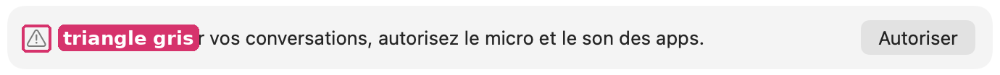
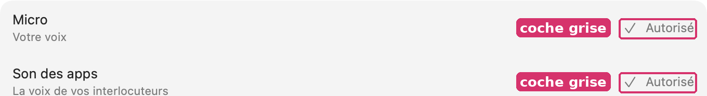
Le symbole
exclamationmark.triangleparaît 5 fois, toujours en.secondaryou sans couleur (analyse-icones-valeurs.csv). Le bandeau du micro, lui, prendPalette.warningà 0,14 (TranscriptReader.swift:1076) : deux langages pour la même chose.- Cause
Onboarding.swift:73etEmptyCalls.swift:25(triangle.secondary, fondCard.fill) ;Onboarding.swift:642,:648(« Autorisé » en.secondary).- Impact
- Au premier lancement et chaque fois qu'une autorisation saute (renouvellement hebdomadaire) : c'est le moment où l'app ne marche pas.
- Règle
- HIG, Color : employer la couleur pour signaler un état, et toujours la même pour le même sens ; Réglages Système › Confidentialité met un point orange ou un interrupteur bleu devant l'état d'une autorisation, jamais un mot gris seul.
- Options
- OptionPourContreLe langage du bandeau du micro partout : triangle et fond
Palette.warning(0,14)Une seule forme ; la valeur existe—UnGroupBoxsystèmeNatifPas de teinte d'avertissement dans le système - Choix
- Option 1, et « Autorisé » prend
checkmark.circle.fillenPalette.success. - Spécification
Où Avant Après Onboarding.swift:73, EmptyCalls.swift:25Image(systemName: "exclamationmark.triangle").foregroundStyle(.secondary)Image(systemName: "exclamationmark.triangle.fill").foregroundStyle(Palette.warning)EmptyCalls.swift:40 (fond)Card.fillPalette.warning.opacity(0.14)Onboarding.swift:642, :648Label("Autorisé", systemImage: "checkmark").foregroundStyle(.secondary)Label { Text("Autorisé").foregroundStyle(.secondary) } icon: { Image(systemName: "checkmark.circle.fill").foregroundStyle(Palette.success) }- Acceptation
grep 'exclamationmark.triangle").foregroundStyle(.secondary)'ne rend rien.- Le bandeau des Réglages et celui du micro ont le même fond (même valeur).
P09 · La carte « Claude relit » : trois indicateurs, une barre grise, une ligne de mécanisme
GêneEffort : 30 minLot B · États et signauxConversation pendant la relecture par Claude- Symptôme
- Un sablier avant le titre, un autre dans la pastille du bas, une barre de progression grise. « · encore 45 s » commence par un point médian. Une phrase entière décrit le mécanisme.
- Preuve
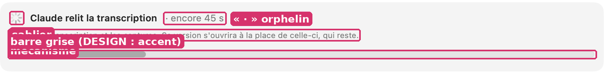
- Cause
TranscriptReader.swift:1490(sablier),:1492(« · » en tête),:1497(phrase),:1499(ProgressView(value:)sans teinte, gris dans une carte),:599(sablier de la pastille).- Impact
- À chaque conversation relue par Claude (réglage par défaut : chaque appel), 45 s à quelques minutes.
- Règle
- HIG, Progress indicators : préférer un indicateur déterminé quand la durée est connue ; DESIGN.md : l'accent sert à « progression » ; TEXTES.md 3 : « le mécanisme se tait ».
- Options
- OptionPourContreBarre accent seule, titre et « encore 45 s » sur une ligne, phrase réduiteUn indicateur, une ligne de moins—Garder le sablier, retirer la barrePlus compactOn perd la durée restante, la seule information utile
- Choix
- Option 1 :
.tint(.accentColor), plus de sablier dans la carte ; la pastille garde son sablier seulement quand la carte est hors de vue ; la phrase devient « Celle-ci reste lisible en attendant. ». - Spécification
Où Avant Après TranscriptReader.swift:1490ProgressView().controlSize(.small)(retiré)TranscriptReader.swift:1492Text("· " + (left > 5 ? …Text(left > 5 ? … ) — sans « · », poussé à droite par le Spacer, .monospacedDigit()TranscriptReader.swift:1497"Il reçoit la transcription et les captures. Sa version s'ouvrira à la place de celle-ci, qui reste.""Celle-ci reste lisible en attendant."TranscriptReader.swift:1499ProgressView(value: …)ProgressView(value: …).tint(.accentColor)- Acceptation
- La carte ne contient qu'un indicateur de progression, en accent.
- Aucun texte de la carte ne commence par « · ».
P10 · Le chrono s'écrit de trois façons, et « 72:05 » après une heure
DétailEffort : 30 minLot B · États et signauxListe (« 12 min »), carte d'enregistrement (« 12:02 »), barre des menus et pastille (« 72:05 »), menu (« Réunion — 12:03 »)- Symptôme
- Le même enregistrement s'affiche « 12 min » dans la liste et « 12:02 » dans la carte, à 400 pt d'écart. Après une heure, la barre des menus écrit « 72:05 ».
- Preuve
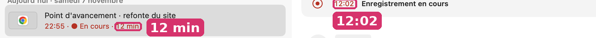
Code :
App.swift:967String(format: "%d:%02d", t / 60, t % 60), sans heures. Menu :App.swift:859, tiret cadratin alors que l'app sépare par « · » partout ailleurs (2 occurrences de « — » dans les textes visibles, mesures-typographie.csv).- Cause
App.swift:964-968,CallCard.swift:211(CLI.duration),App.swift:859,:923.- Impact
- Chaque enregistrement ; les réunions de plus d'une heure.
- Règle
- Convention de l'Horloge et de QuickTime Player : « 1:12:05 » au-delà d'une heure. HIG, Writing : la même donnée s'écrit de la même façon partout.
- Options
- OptionPourContreUn seul formateur (
Duration.formatted(.time(pattern: .minuteSecond / .hourMinuteSecond)))Système, localisé—Garder « 12 min » dans la listeLa liste est au reposElle ment pendant 59 s - Choix
- Option 1, partout où l'enregistrement est en cours ; « 12 min » reste pour les conversations finies.
- Spécification
Où Avant Après App.swift:964-968String(format: "%d:%02d", t / 60, t % 60)Duration.seconds(t).formatted(.time(pattern: t >= 3600 ? .hourMinuteSecond : .minuteSecond))App.swift:859, :923"\(recordingLabel(s)) — \(elapsed())""\(recordingLabel(s)) · \(elapsed())"CallCard.swift:211CLI.duration(m.duration)le même chrono (TimelineView à la seconde)- Acceptation
- À 1 h 12 min 5 s, la barre des menus, la pastille, la carte et la liste affichent « 1:12:05 ».
P11 · Pendant un enregistrement, un squelette de chargement promet un texte qui ne vient pas
DétailEffort : 1 hLot B · États et signauxConversation en cours d'enregistrement- Symptôme
- Sous la carte « ◉ 12:02 Enregistrement en cours », toute la hauteur est remplie de répliques grises vides, pendant toute la durée de l'appel.
- Preuve
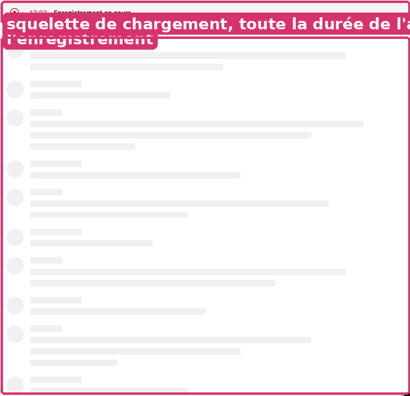
- Cause
TranscriptReader.swift:1754(RecordingSkeleton), alors que:1439a déjà le texte juste (« Transcription à la fin de l'enregistrement »).- Impact
- Pendant chaque enregistrement ouvert dans la fenêtre.
- Règle
- Un squelette signifie « contenu imminent » (convention des listes qui chargent : App Store, Musique).
- Options
- OptionPourContreLe texte de
:1439et l'onde en direct à la place du squeletteVrai à l'instantUne vue à dessinerGarder le squeletteChoix faitFaux pendant une heure - Choix
- Option 1, à arbitrer par Gildas (choix tranché).
- Spécification
Où Avant Après TranscriptReader.swift (vue en cours)RecordingSkeleton()VStack { onde des deux pistes en direct (LevelBars) ; Text("Transcription à la fin de l'enregistrement").foregroundStyle(.secondary) }- Acceptation
- Pendant un enregistrement, aucun squelette gris dans le panneau de droite.
P12 · La pastille du bas affiche « v1 », « v2 »
DétailEffort : 15 minLot B · États et signauxBas de chaque conversation- Symptôme
- « v1 · Transcription », puis « v2 · Transcription » : le numéro du fichier, en permanence.
- Preuve
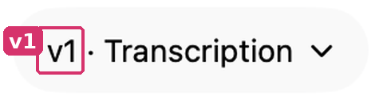
- Cause
TranscriptReader.swift:658:"v\(reader.number(v)) · \(v.kind)".- Impact
- Chaque conversation.
- Règle
- DESIGN.md : « Montrer le final […] jamais la liste des versions » ; Pages et Keynote nomment une version par sa date, et seulement dans « Parcourir toutes les versions ».
- Options
- OptionPourContreLa nature seule (« Transcription », « Relue par Claude », « Modifiée »)Dit ce qu'on litDeux versions de même nature se distinguent dans le menu seulementLa nature et la dateDistingue toutPlus long
- Choix
- Option 1 ; le numéro et la date restent dans le menu ouvert par la pastille (
:252). - Spécification
Où Avant Après TranscriptReader.swift:658return "v\(reader.number(v)) · \(v.kind)" + …return v.kind + (v.url == reader.fresh ? " · nouvelle" : "")- Acceptation
- La pastille ne contient aucun « v » suivi d'un chiffre.
Lot C · Liste, vignettes, calendrier
P13 · Cinq façons de dessiner la vignette d'une ligne
GêneEffort : 4 hLot C · Liste, vignettes, calendrierListe des conversations, Notes, recherche, Groupes- Symptôme
- Dans une même colonne : capture + pastille, logo sur tuile grise, feuille Seyès dessinée, téléphone dessiné (écran en dégradé violet), heure en grand pour une réunion. Le même appel (Banque Aurore) prend un iPhone violet dans la liste et un combiné vert dans Notes.
- Preuve
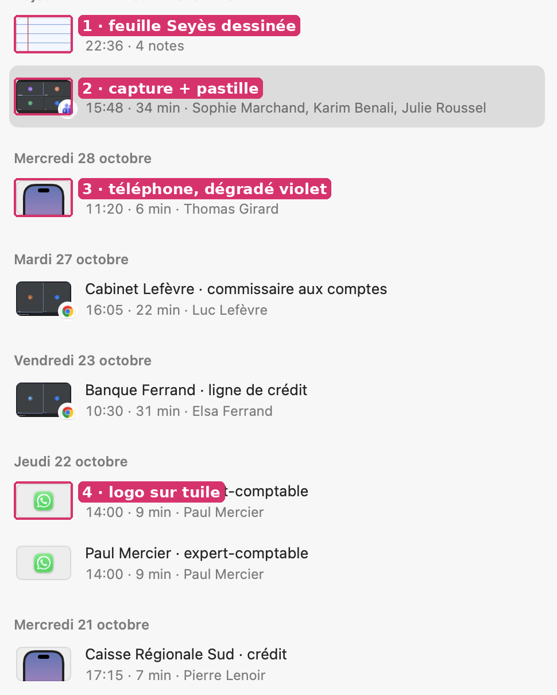
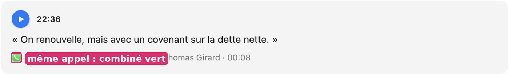
- Cause
KindThumb.swift:55-83(réunion : heure en 13 pt ; téléphone : dégradé fixe RGB 0.36/0.46/0.72 → 0.62/0.5/0.75),KindThumb.swift:88-103(Seyès),CallCard.swift:242-290(logo sur tuile),CallCard.swift:337(capture). Le combiné de Notes vient deCallLogo, qui ne connaît pasKindThumb.- Impact
- Chaque ligne de la liste : c'est l'élément le plus répété de l'app (16 lignes à l'écran sur
lecture.webp). - Règle
- HIG, Images : garder un style cohérent dans un même ensemble ; Photos et Mail : une seule forme de vignette par liste (une image, ou un monogramme sur fond neutre).
- Options
- OptionPourContreCapture si elle existe, sinon tuile neutre + un seul signe (logo ou SF Symbol)Une grammaire ; suit le clair et le sombre ; un seul composantPerd le clin d'œil SeyèsTout en SF Symbols, plus de captures dans la listeUniformePerd l'information la plus riche (qui était à l'écran)Garder—Cinq styles
- Choix
- Option 1. Signes : logo de l'app ;
iphone(appel du téléphone) ;person.2(réunion) ;note.text(notes).CallLogoetKindThumbse fondent en un seul composant, employé aussi par Notes. - Spécification
Où Avant Après KindThumb.swift:39-44switch kind { case .notes: seyes … .phone(island): phone(island) }Image(systemName: kind.symbol).font(.system(size: 15)).foregroundStyle(.secondary) sur Thumb.fillKindThumb.swift:66-83UnevenRoundedRectangle + LinearGradient(retiré)KindThumb.swift:56-63Text(heure) 13 pt semi-grasImage(systemName: "person.2")NotesPane.swift:85 (CallLogo)CallLogo(meta:)le même composant que la liste- Acceptation
- Plus aucune couleur RGB en dur dans
KindThumb.swift. - Le même appel a la même vignette dans la liste, Notes, la recherche et Groupes.
- Plus aucune couleur RGB en dur dans
P14 · Le bouton des notes, en haut à droite, ne se lit pas
GêneEffort : 30 minLot C · Liste, vignettes, calendrierBarre d'une conversation qui a des notes- Symptôme
- Une pile de trois feuilles Seyès de 22×16 pt, le nombre en 11 pt gras bleu marine fixe imprimé par-dessus la réglure.
- Preuve
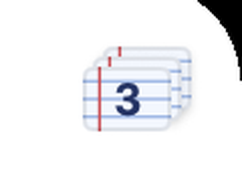
Le chiffre (#1F3366) est posé sur des lignes à 0,7 d'opacité tous les 4,4 pt : le fond change sous chaque jambage. Couleurs fixes, en clair comme en sombre.
- Cause
TranscriptReader.swift:1978-2000(NotesPile),:1993(11 pt gras, RGB 0.12/0.2/0.4).- Impact
- Chaque conversation qui a des notes.
- Règle
- Mail, Notes, Messages : un nombre se met à côté de l'objet en chiffres secondaires, ou dans une pastille ; jamais imprimé sur un dessin. HIG, Dark Mode : pas de couleur fixe pour du texte.
- Options
- OptionPourContre
note.text18 pt + nombre en pastilleChip.fillLisible, système, suit le sombre—Garder la pile, nombre à côtéGarde le dessinToujours des couleurs fixes - Choix
- Option 1.
- Spécification
Où Avant Après TranscriptReader.swift:561-568NotesPile(count:)HStack(spacing: 4) { Image(systemName: "note.text").font(.system(size: BarIconSize.font)); Text("\(n)").font(.caption.weight(.semibold).monospacedDigit()).padding(.horizontal, 6).background(Capsule().fill(Chip.fill)) }- Acceptation
- Le nombre est lisible à 100 % de zoom en clair et en sombre (contraste ≥ 7:1 : primaire sur Chip.fill).
P15 · Le bas de la liste coupe un en-tête de jour
DétailEffort : 20 minLot C · Liste, vignettes, calendrierColonne des conversations, au-dessus de « Enregistrer une réunion »- Symptôme
- « Lundi 2 novembre » apparaît seul, sans ligne, collé au pied, comme si ce jour était vide.
- Preuve
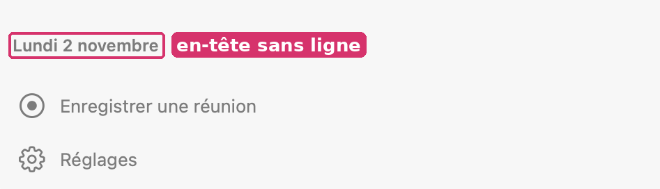
- Cause
- Le haut a
.scrollEdgeEffectStyle(.soft, for: .top)(WindowBar.swift:98) ; le bas n'a rien, et la liste défile sousColumnFoot(RecordingsPanel.swift:7). - Impact
- Toujours, dès que la liste dépasse la hauteur de la fenêtre.
- Règle
- HIG, Scroll views : sur macOS 26, l'effet de bord signale que le contenu continue sous une barre
- Options
- OptionPourContre
.scrollEdgeEffectStyle(.soft, for: .bottom)Système, une lignemacOS 26 seulement ; repli : un dégradéÉpingler les en-têtes de jour (pinnedViews)Toujours un en-tête justeChange le comportement de la liste - Choix
- Option 1, avec un dégradé de 24 pt vers la couleur de la colonne avant macOS 26.
- Spécification
Où Avant Après CallsWindow.swift (liste de la colonne)—.scrollEdgeEffectStyle(.soft, for: .bottom) ; avant 26 : .overlay(alignment: .bottom) { LinearGradient(…) .frame(height: 24) }- Acceptation
- Aucun en-tête de jour n'est visible sans au moins une ligne entière sous lui au-dessus du pied.
P16 · Un titre par défaut grisé se lit comme une ligne éteinte
DétailEffort : 10 minLot C · Liste, vignettes, calendrierListe : « Appel WhatsApp »- Symptôme
- Quand aucun titre n'a été trouvé, le titre de remplacement est en
.secondary: la ligne entière paraît désactivée ou à la corbeille. - Preuve
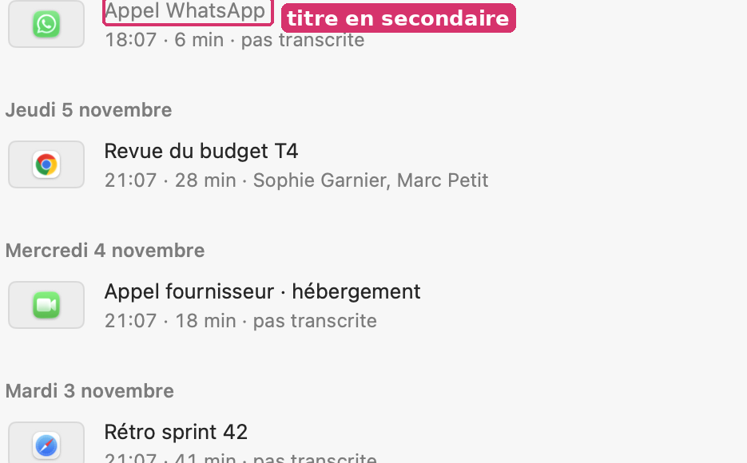
- Cause
CallCard.swift:110:.foregroundStyle(t.found ? .primary : .secondary). (La première version de cette relecture parlait d'incohérence : c'est en fait une règle, appliquée partout.)- Impact
- Chaque conversation sans titre trouvé (pas encore transcrite, ou hors des IA).
- Règle
- Mail : « (Aucun objet) » s'écrit dans la couleur normale du titre ; c'est le libellé qui dit l'absence, pas le gris.
- Options
- OptionPourContreTitre toujours
.primaryLisible ; le libellé (« Appel WhatsApp ») dit déjà l'absence de titreOn perd un signalGarderLe signal resteConfusion avec « éteint » - Choix
- Option 1.
- Spécification
Où Avant Après CallCard.swift:110.foregroundStyle(t.found ? .primary : .secondary).foregroundStyle(.primary)- Acceptation
- Aucun titre de ligne en secondaire.
P17 · Le calendrier marque un jour deux fois (gras et point)
DétailEffort : 10 minLot C · Liste, vignettes, calendrierCalendrier de la colonne- Symptôme
- Un jour qui a des conversations est en semi-gras et porte un point ; les autres sont en secondaire.
- Preuve
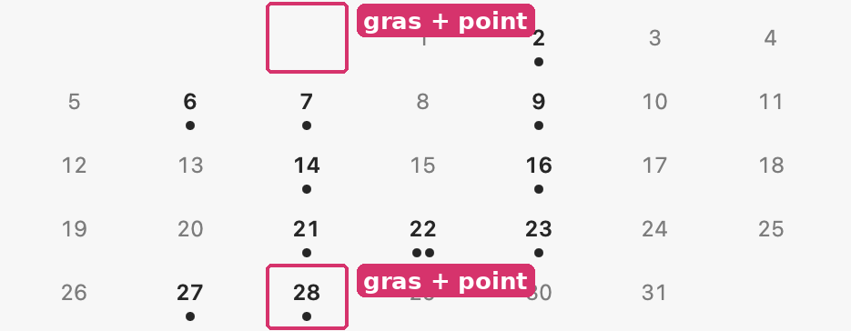
- Cause
DotCalendar.swift:90(.weight(has || isToday ? .semibold : .regular)) et:91-95(points).- Impact
- Chaque ouverture du calendrier.
- Règle
- Calendrier sur iPhone (vue Mois) : chiffres en poids normal, un point sous les jours qui ont un événement. Un seul codage par information.
- Options
- OptionPourContreLe point seul, chiffres en poids normalGrille calme ; le point suffit—Le gras seul—Le nombre de conversations (1 ou 2 points) se perd
- Choix
- Option 1 ; le jour courant en accent (voir P06).
- Spécification
Où Avant Après DotCalendar.swift:90.weight(has || isToday ? .semibold : .regular).weight(isToday ? .semibold : .regular)- Acceptation
- Seul le jour courant est en semi-gras.
P18 · Liste et Calendrier : deux boutons au lieu d'un contrôle segmenté
DétailEffort : 45 minLot C · Liste, vignettes, calendrierBarre de la colonne- Symptôme
- Deux icônes séparées, celle choisie sur un fond
Chosen.fillen capsule. - Preuve
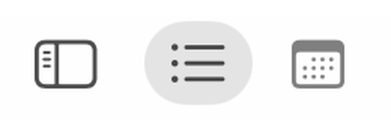
- Cause
ColumnTools.swift:180-205(ModePicker, deuxButton).- Impact
- Chaque changement de vue ; VoiceOver annonce deux boutons au lieu d'un choix.
- Règle
- HIG, Segmented controls : pour choisir entre des vues exclusives ; Finder (Icônes / Liste / Colonnes / Galerie) et Calendrier (Jour / Semaine / Mois / Année).
- Options
- OptionPourContre
Picker(.segmented)avec icônesNatif, annoncé comme un choixUne forme un peu différente du reste de la barreGarder les boutons, ajouter.accessibilityAddTraits(.isSelected)Rien ne bouge à l'œilPas la forme attendue - Choix
- Option 1.
- Spécification
Où Avant Après ColumnTools.swift:180-205deux Button + Capsule(Chosen.fill)Picker("Vue", selection: $model.mode) { Image(systemName: "list.bullet").tag(.list); Image(systemName: "calendar").tag(.calendar) }.pickerStyle(.segmented).labelsHidden()- Acceptation
- VoiceOver annonce un seul contrôle de choix, avec la vue sélectionnée.
Lot D · Réglages
P19 · Deux trous de 24 pt dans les Réglages, dus à des piles vides
GêneEffort : 20 minLot D · RéglagesRéglages › Agents, Réglages › Téléphones- Symptôme
- Entre deux groupes, l'écart vaut 52 pt (titre compris) ; il vaut 76 pt entre « Claude » et « Claude Desktop », et 75 pt entre « Ajouter un téléphone » et « Android », sans rien de visible entre eux.
- Preuve
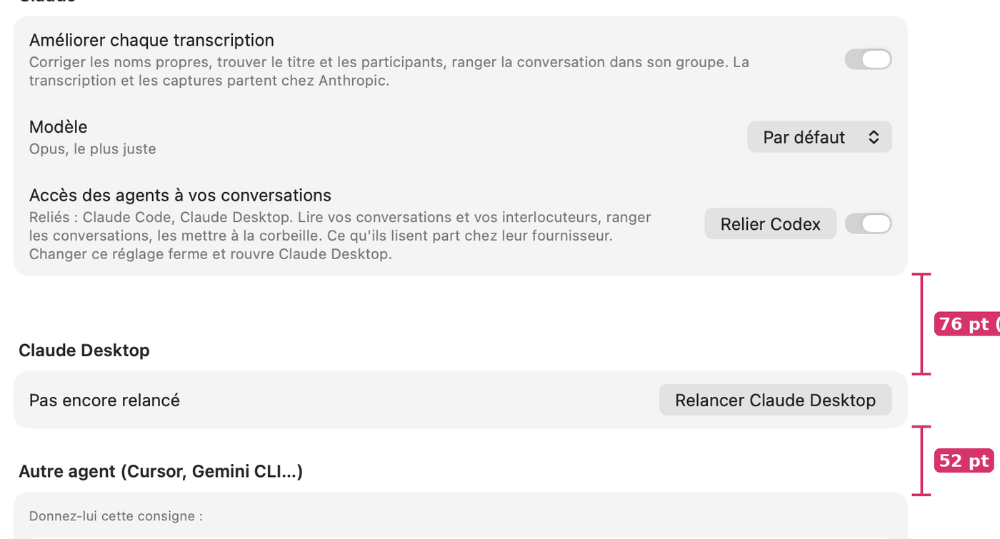
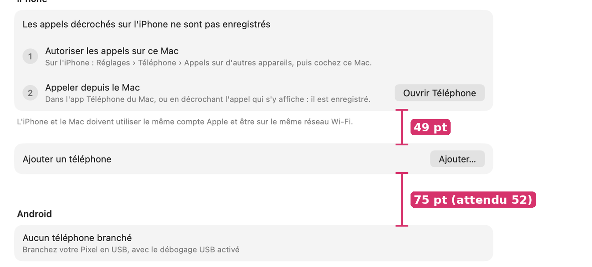
Mesure au pixel sur 10 captures : mesures-rythme-reglages.csv. 7 écarts à 52 pt, 6 à 73-76 pt dont 4 justifiés par un pied de groupe, 2 sans rien.
- Cause
- Les pages empilent leurs groupes dans
VStack(spacing: 24)(Onboarding.swift:170,:539).AgentSpend()(Onboarding.swift:772) rend unVStackvide quand il n'y a pas de consommation (AgentSpend.swift:12-13) ;PhoneLinkGroup()aussi (SettingsParts.swift:65, commenté : « Une pile, pas un Group : vide, un Group n'existe pas »). Une pile vide compte comme un bloc : un espacement de 24 pt de plus. - Impact
- À chaque ouverture de ces deux pages, chez quiconque n'a pas encore de consommation ou de téléphone relié par le Wi-Fi.
- Règle
- DESIGN.md : « on sépare par l'espacement » — sans filets, l'espacement est la structure ; un écart double dit « autre partie ». HIG, Layout : un espacement régulier entre groupes de même rang.
- Options
- OptionPourContreRendre
EmptyViewquand vide, et lire les téléphones ailleurs que dansonAppearPlus de trouDéplacer leonAppeardePhoneLinkGroup.frame(height: 0).padding(.top, -24)sur la pile videUne ligneBricolage fragile - Choix
- Option 1 : la condition remonte à l'appelant (
if spend.any { AgentSpend() }) ; le rechargement dePhoneLinkGrouppasse dans le modèle de la page. - Spécification
Où Avant Après Onboarding.swift:772AgentSpend()if AgentSpend.hasAny { AgentSpend() }Onboarding.swift:589if Features.phoneLink { PhoneLinkGroup() }if Features.phoneLink, !PhoneLink.linked.isEmpty || !Features.addPhone { PhoneLinkGroup() }SettingsParts.swift:65VStack(alignment: .leading, spacing: 24) { … }Group { … } (la relecture des téléphones passe dans w.reloadPhones())- Acceptation
mesures.pyrelancé sur de nouvelles captures : aucun écart entre deux cartes hors de {52, 73-76 avec un pied}.- Réglages › Agents sans consommation : 52 pt entre « Claude » et le groupe suivant.
PhoneLinkGroup est voulue pour relire les téléphones (77f3969, 2026-11-05) : la reco garde ce besoin, ailleurs.P20 · Accueil des Réglages : symboles au trait bleus, « Groupes » en square.stack, « Paramètres » dans « Réglages »
GêneEffort : 30 minLot D · RéglagesRéglages (accueil)- Symptôme
- Cinq symboles au trait en accent (15 pt) ; celui de Groupes,
square.stack, se lit comme une corbeille à cette taille ; la dernière entrée s'appelle « Paramètres », synonyme du titre de la page. - Preuve
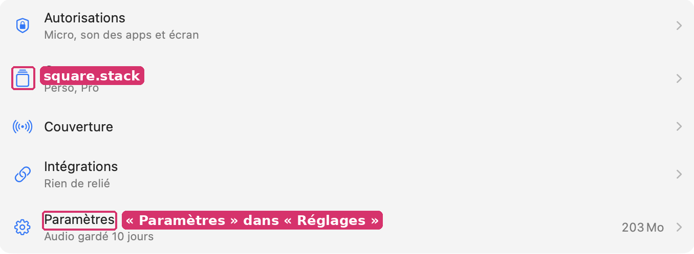
- Cause
Onboarding.swift:228-230(pageIcon: 15 pt,.tint) ;:173-197(entrées) ;Wizard.swift:80(titre « Paramètres »).- Impact
- Chaque ouverture des Réglages.
- Règle
- Réglages Système, Mail › Réglages, Safari › Réglages : une tuile de couleur (rayon continu) avec un glyphe blanc rempli devant chaque catégorie ; la page « fourre-tout » s'appelle « Général ».
- Options
- OptionPourContreTuiles 20×20, rayon 5, glyphe blanc rempli ; « Paramètres » → « Général »Familier ; on retrouve une entrée par sa couleurCinq couleurs à choisirGarder les symboles, changer seulement Groupes et le motMinimalReste moins familier
- Choix
- Option 1 : Autorisations
hand.raised.fillbleu ; Groupesfolder.fillorange ; Couvertureantenna.radiowaves.left.and.rightvert ; Intégrationslinkviolet ; Généralgearshape.fillgris. - Spécification
Où Avant Après Onboarding.swift:228-230Image(systemName: symbol).font(.system(size: 15)).foregroundStyle(.tint).frame(width: 22, height: 22)Image(systemName: symbol).font(.system(size: 12, weight: .semibold)).foregroundStyle(.white).frame(width: 20, height: 20).background(RoundedRectangle(cornerRadius: 5, style: .continuous).fill(color))Onboarding.swift:176"square.stack""folder.fill"Onboarding.swift:197, Wizard.swift:80"Paramètres""Général"- Acceptation
- Chaque entrée de l'accueil a une tuile de couleur distincte.
- Le mot « Paramètres » n'apparaît plus dans l'interface Mac.
square.stack de 75a4d2b. La reco change les icônes et un mot ; « Paramètres » est un choix de nom à confirmer par Gildas (TEXTES.md : un mot nouveau passe par lui).P21 · « Base de données externe » ne contient que des « Copies »
DétailEffort : 10 minLot D · RéglagesRéglages › Intégrations › Base de données externe- Symptôme
- L'entrée et le titre disent « Base de données externe » ; la page contient un groupe « Copies », « Aucune copie », « Ajouter une copie… ». (Rectificatif : la première version de cette relecture disait le titre différent de l'entrée ; ils sont identiques, l'écart est avec le contenu.)
- Preuve
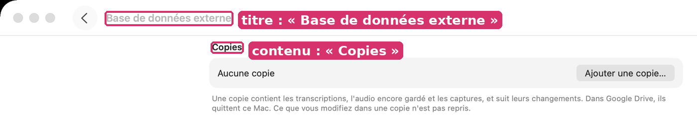
- Cause
Wizard.swift:81etOnboarding.swift:362(« Base de données externe ») ; le groupe « Copies » dansonlineGroups.- Impact
- Chaque visite ; « base de données » est un mot du code, et fait croire à un serveur.
- Règle
- TEXTES.md 3 et 8 : le mot de la personne, un mot par objet. HIG, Writing : employer les mots des gens.
- Options
- OptionPourContre« Copies » partout (entrée, titre, groupe sans titre)Le mot du contenu—« Copie dans un dossier »Plus explicitePlus long
- Choix
- Option 1, à confirmer par Gildas (vocabulaire).
- Spécification
Où Avant Après Wizard.swift:81, Onboarding.swift:362"Base de données externe""Copies"onlineGroupsSettingsGroup("Copies")SettingsGroup("")- Acceptation
- Le titre de la page est le mot de son contenu.
P22 · Téléphones : des ronds bleus cochés qui ne sont ni interrupteurs ni cases
DétailEffort : 20 minLot D · RéglagesRéglages › Téléphones › Ce qui est enregistré sur Android- Symptôme
- Deux lignes portent à droite un rond bleu plein coché (
checkmark.circle.fill, accent). - Preuve
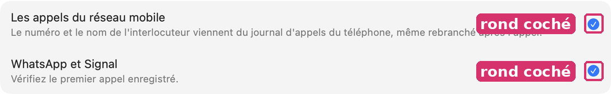
- Cause
Onboarding.swift:615,:618.- Impact
- Chaque visite de la page.
- Règle
- HIG, Toggles : sur macOS, un interrupteur pour un réglage ; une case pour une liste d'options ; une coche de liste pour une sélection. Le rond bleu plein est la coche de sélection d'iOS.
- Options
- OptionPourContreInterrupteur si c'est réglableFamilier—Coche
Palette.successsans rond si c'est un constatDit « ça marche »— - Choix
- Selon le fait : ici c'est un constat (rien à régler) → coche de réussite, comme « Autorisé » (P08).
- Spécification
Où Avant Après Onboarding.swift:615, :618Image(systemName: "checkmark.circle.fill").foregroundStyle(Color.accentColor)Image(systemName: "checkmark.circle.fill").foregroundStyle(Palette.success)- Acceptation
- Plus de coche en accent hors d'une sélection.
P23 · La consigne pour un autre agent : un chemin en police de texte
DétailEffort : 20 minLot D · RéglagesRéglages › Agents › Autre agent- Symptôme
- Le chemin de l'app est composé en police de texte, coupé au milieu sur trois lignes, entre guillemets dans une phrase.
- Preuve
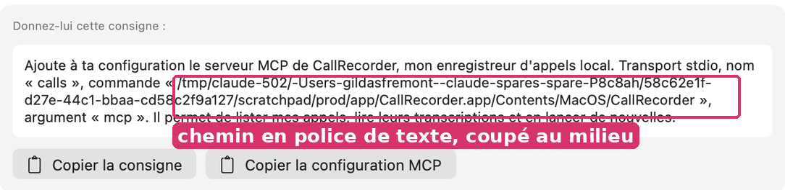
- Cause
Onboarding.swift:790:Text(ClaudeSetup.prompt)en.callout.- Impact
- Chaque personne qui relie un autre agent ; la vérification du chemin à l'œil.
- Règle
- Terminal, Xcode et Informations du Finder affichent les chemins en chasse fixe ou les tronquent au milieu ; HIG, Typography : police à chasse fixe pour le code.
- Options
- OptionPourContreLa phrase en texte, nom / commande / argument en
.monospacedsur leurs lignesSe relitDeux blocs au lieu d'unTout en chasse fixeSimpleLa phrase devient du code - Choix
- Option 1.
- Spécification
Où Avant Après Onboarding.swift:790Text(ClaudeSetup.prompt)Text(phrase) + Text(commande).font(.system(.callout, design: .monospaced)).textSelection(.enabled)- Acceptation
- Le chemin s'affiche en chasse fixe.
P24 · Une date numérique, la seule de l'app : « Du 03/11 au 10/11 »
DétailEffort : 10 minLot D · RéglagesRéglages › Autorisations › Chaque semaine- Symptôme
- « Du 03/11 au 10/11 » à côté de « Chaque mardi à 9 h ». Partout ailleurs, l'app écrit « samedi 7 novembre ».
- Preuve
CallCapture/WeeklyAccess.swift:100:f.dateFormat = "dd/MM". Seule occurrence de ce format (mesures-typographie.csv, règle « date numérique » : aucune dans les textes, le format est construit).- Cause
CallCapture/WeeklyAccess.swift:100.- Impact
- Page Autorisations, chaque semaine.
- Règle
- HIG, Writing : même format de date partout ; Calendrier écrit « 3–10 nov. ».
- Options
- OptionPourContre
Date.FormatStyle: « 3 – 10 novembre »Localisé— - Choix
- Option 1.
- Spécification
Où Avant Après CallCapture/WeeklyAccess.swift:100f.dateFormat = "dd/MM"(start..<end).formatted(.interval.day().month(.wide))- Acceptation
- Aucun « dd/MM » dans le code.
Lot E · Barre du bas et lecteur
P25 · Copier a deux icônes ; la barre du bas a trois ronds séparés
DétailEffort : 45 minLot E · Barre du bas et lecteurBas de chaque conversation ; Notes ; Réglages › Agents ; menus contextuels- Symptôme
- Copier est
clipboard(une planchette) à 8 endroits etdoc.on.docà 1 (« Copier avec le contexte »). Rechercher, Copier, Partager sont trois ronds de verre côte à côte. - Preuve
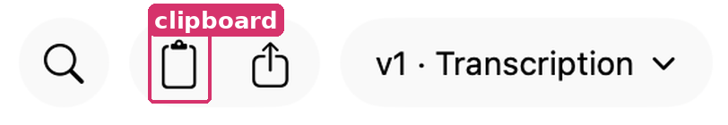
analyse-icones-valeurs.csv :
clipboardà 8 endroits (CallCard.swift:25, 29 ; NotesPane.swift:132, 241, 297, 319 ; Onboarding.swift:835 ; TranscriptReader.swift:968 ; l'inventaire automatique en compte 5, les 3 autres sont dans des ternaires),doc.on.doc×1 (TranscriptReader.swift:756).- Cause
- Voulu : « Le presse-papiers, la même icône de copie partout » (
TranscriptReader.swift:966-967), mais:756y échappe. Les trois boutons sont troisBarIconindépendants. - Impact
- Chaque conversation, chaque note.
- Règle
- Dans les menus de macOS 26 (Édition › Copier, menus contextuels de Finder et Safari), Copier porte
doc.on.doc. HIG, Toolbars : grouper les boutons liés dans une même forme de verre. - Options
- OptionPourContre
doc.on.docpartout, et un seul groupe de verreFamilierRevient sur un choixclipboardpartout (corriger:756)Garde le choix, cohérentMoins familier - Choix
- Option 1 pour l'icône (familiarité, et c'est l'icône qu'affiche le menu Édition du système) ; groupement en une capsule.
- Spécification
Où Avant Après 8 lieux listés"clipboard""doc.on.doc"TranscriptReader.swift (barre)trois BarIconun HStack(spacing: 0) dans un seul FloatingGlass- Acceptation
grep -c '"clipboard"'= 0.- Les trois boutons partagent une capsule de verre.
P26 · Le temps du lecteur : « 00:00 / 34:00 »
DétailEffort : 30 minLot E · Barre du bas et lecteurLecteur de chaque conversation- Symptôme
- Position et durée collées par une barre oblique, avec un zéro de tête (« 00:00 »), avant les pistes.
- Preuve
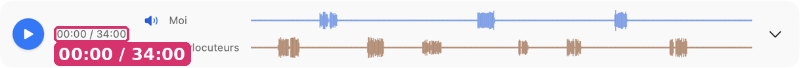
- Cause
TranscriptReader.swift:486.- Impact
- Chaque écoute.
- Règle
- QuickTime Player et Musique : le temps écoulé à gauche de la piste, le temps restant à droite (« −34:00 »), sans zéro de tête.
- Options
- OptionPourContreÉcoulé à gauche, restant à droiteLecture spatiale ; familierDeux textes à placer« 0:00 / 34:00 »Une seule retoucheReste un bloc
- Choix
- Option 1.
- Spécification
Où Avant Après TranscriptReader.swift:486Text("\(Self.short(at)) / \(Self.short(m.duration))")Text(short(at)) avant les pistes ; Text("−" + short(m.duration − at)) après ; .monospacedDigit()- Acceptation
- Le lecteur affiche « 0:00 » à gauche et « −34:00 » à droite.
Lot F · Système de valeurs
P27 · Le système dérive : 43 combinaisons de police, 26 tailles en dur, 87 espacements et 43 opacités hors système
GêneEffort : 2 jours (en continu)Lot F · Système de valeursTout le code- Symptôme
- Pour 223 appels à
.font, 43 combinaisons distinctes (style, taille, graisse, options). 26 tailles en points écrites à la main, dont 14 qui égalent un style existant. 87 espacements hors de l'échelle de DESIGN.md (dont 24 « 2 » et 18 « 3 »). 43 valeurs d'opacité distinctes. 20 rayons littéraux contre 40 nommés. Des constantes en double :CallsWindow.swift:91cornerRadius = 12(=Card.radius),RecordingsPanel.swift:14radius = 12,CallsView.inset = 8etJournalPane.inset = 8. - Preuve
Tables : polices distinctes, tailles en dur, espacements, hors échelle (fichier:ligne), opacités, rayons. Voir la table de migration.
- Cause
- Pas de jeton pour la taille d'une icône de ligne (15 pt revient 5 fois), ni pour les avatars (12 pt semi-gras ×4), ni pour l'espacement serré (2, 3) ; DESIGN.md le reconnaît (« Écarts connus »).
- Impact
- Invisible une valeur à la fois ; visible ensemble : des marges de 10, 11 et 12 côte à côte, des gris de survol à 0,06, 0,07 et 0,08.
- Règle
- HIG, Typography : employer les styles de texte du système ; DESIGN.md : « Une seule valeur par rôle ».
- Options
- OptionPourContreMigrer tout d'un coupFiniConflits avec les sujets en cours (DESIGN.md l'écarte)Migrer en retouchant chaque vue, avec la table et un contrôle automatiqueSans conflit ; mesurablePlus long
- Choix
- Option 2, avec
inventaire.pyetmesures.pyen contrôle : le nombre de valeurs hors système ne doit que baisser. - Spécification
Où Avant Après Style.swift—ajouter IconSize.row = 15, Avatar.font = .system(size: 12, weight: .semibold), Space.tight = 2CallsWindow.swift:91, RecordingsPanel.swift:14cornerRadius = 12 / radius = 12Card.radiusToutes les vuesvoir systeme.htmltable de migration ligne à ligne- Acceptation
analyse-resume.json: polices_distinctes ≤ 20, espacements_hors_echelle ≤ 30, opacites_distinctes ≤ 15, après le lot.
P28 · Des composants en double
DétailEffort : 3 hLot F · Système de valeursCode- Symptôme
- Deux ronds de verre (
GlassCircle,ColumnTools.swift:140, etCircleGlass,WindowBar.swift:115) ; deux boutons d'icône carrés de 36 (BarIconetPanelIcon, déjà noté dans DESIGN.md) ; deux avatars (Avatar,CallCard.swift:294, etavatar(),TranscriptReader.swift:1315) ; quatre vignettes (CallThumb,RowThumb,KindThumb,CaptureImage). - Preuve
94 composants relevés (inventaire, section Composants).
- Cause
- Chaque composant est né dans son fichier.
- Impact
- Chaque correction doit se faire deux fois ; les écarts naissent là (P13).
- Règle
- DESIGN.md : « avant d'ajouter une valeur, on cherche si son rôle en a déjà une ».
- Options
- OptionPourContreFusionner en un composant public dans
Style.swift/Hover.swiftUne sourceToucher 6 fichiers - Choix
- Option 1, au fil des retouches.
- Spécification
Où Avant Après ColumnTools.swift:140GlassCircleCircleGlass (WindowBar.swift:115)ColumnTools.swift:152PanelIconBarIcon (rendu public)CallCard.swift:294Avatarun seul Avatar(who:, tint:)- Acceptation
- Un seul type par rôle dans le code.
P29 · Ponctuation française : 145 espaces sécables avant « : ? ! », 28 après « « »
DétailEffort : 1 h (script)Lot F · Système de valeursTous les textes- Symptôme
- Les textes écrivent « Donnez-lui cette consigne : » avec une espace ordinaire : à la coupure de ligne, le « : » ou le « » » peut partir seul au début de la ligne suivante.
- Preuve
mesures-typographie.csv : 145 textes avec une espace sécable avant « : ; ? ! » », 28 après « « ». Le texte des Réglages se compose à la largeur de la fenêtre (900 pt au minimum,
CallsWindow.swift:84) : toute phrase longue peut couper là.- Cause
- Saisie au clavier ; aucun contrôle.
- Impact
- Chaque phrase qui passe à la ligne près d'une ponctuation double.
- Règle
- Lexique des règles typographiques en usage à l'Imprimerie nationale : espace insécable avant « : » et « » », fine insécable avant « ; ? ! ».
- Options
- OptionPourContreRemplacer au source par U+202F / U+00A0, et un contrôle dans
scripts/retours.pyou un testUne fois pour toutesLes espaces insécables ne se voient pas dans l'éditeurUne fonction qui corrige à l'affichageLe source reste lisibleUn passage de plus partout - Choix
- Option 1, par script, et un test qui refuse une espace ordinaire avant « : ; ? ! » ».
- Spécification
Où Avant Après Sources/CallRecorder/*.swift" :""\u{00A0}:" (et \u{202F} avant ; ? !)Tests—un test qui parcourt les chaînes visibles- Acceptation
mesures.py: règle « espace avant ponctuation double » = 0.
P30 · En sombre, 16 couleurs fixes ne suivent pas
DétailEffort : 1 hLot F · Système de valeursVignettes, pile des notes, téléphone dessiné, quelques fonds- Symptôme
- Le fond Seyès (#F2F7FF), le chiffre de la pile (#1F3366), le téléphone (noir et dégradé violet), le fond de capture (#262626) sont les mêmes en clair et en sombre.
- Preuve
analyse-couleurs-valeurs.csv : 16 couleurs RGB ou blanc/gris écrites en dur. Aucune capture en sombre n'existe dans la série 0.24.0 : à vérifier à l'écran.
- Cause
KindThumb.swift:71-102,TranscriptReader.swift:1994,CallCard.swift:366.- Impact
- Mode sombre, chaque ligne de notes ou de téléphone.
- Règle
- HIG, Dark Mode : employer des couleurs dynamiques
- Options
- OptionPourContreDisparaissent avec P13 et P14Rien à maintenir—Une variante sombre pour chacuneGarde les dessins16 valeurs de plus
- Choix
- Option 1 ; et ajouter trois captures sombres à la série (liste, conversation, Réglages).
- Spécification
Où Avant Après KindThumb.swift, TranscriptReader.swift:1994Color(red:…)(retiré par P13, P14)- Acceptation
analyse-resume.json: couleurs_en_dur ≤ 6 (les logos de marque).
Lot G · Hors de la fenêtre
P31 · L'icône de l'app ne remplit pas le gabarit de macOS 26
GêneEffort : 1 jourLot G · Hors de la fenêtreDock, Finder, Réglages Système, notifications, feuilles d'autorisation- Symptôme
- Le micro a son propre contour (fils visibles sur le bord, coins qui ne sont pas ceux du squircle d'Apple).
- Preuve

À vérifier sur un Mac en macOS 26 : une icône qui ne remplit pas le gabarit y est réduite et posée dans une tuile grise. C'est la seule fiche de ce dossier qui n'a pas sa preuve à l'écran.
- Cause
scripts/icone.swift;Resources/AppIcon*.icns(format d'avant macOS 26, sans.icon).- Impact
- Partout où l'app s'affiche, tous les jours.
- Règle
- HIG, App icons : sur macOS 26, des couches dans Icon Composer ; le système applique la forme, les reflets, les variantes sombre et teintée
- Options
- OptionPourContreFichier
.iconà trois couches (grille, plaque, socle) remplissant le squircleNatif ; variantes sombre et teintée gratuitesRefaire l'exportGarderLe dessin resteEncagé sur 26 - Choix
- Option 1, après vérification à l'écran.
- Spécification
Où Avant Après scripts/icone.swiftun maître 1024 au contour libretrois couches exportées pour Icon Composer ; AppIcon.icon dans Resourcesscripts/package.shcopie de AppIcon.icnscompilation de AppIcon.icon par actool (Xcode 26) en Assets.car ; CFBundleIconName = AppIcon dans Info.plist- Acceptation
- Dans le Dock de macOS 26, l'icône n'a pas de tuile grise autour.
P32 · Pastille volante : deux rouges ; « CallRecorder » visible 19 fois
DétailEffort : 30 minLot G · Hors de la fenêtrePastille, menu de l'app, Réglages, notifications- Symptôme
- La pastille montre un point rouge, le chrono, Capturer, et Arrêter en
stop.circlerouge : deux rouges en 160 pt. Le nom s'écrit « CallRecorder » dans 19 textes visibles (menu « Quitter CallRecorder », « activez CallRecorder », titre de notification), « Callrecorder » ailleurs, parfois dans la même ligne (« Relancer Callrecorder » au-dessus de « activez CallRecorder »). - Preuve
Code :
Pastille.swift:77(stop.circle,Palette.live),:167(point rouge). Textes : mesures-typographie.csv, règle « nom de l'app » (19).- Cause
- Le menu de l'app est écrit à la main (
MainMenu.swift:21-30: « À propos de CallRecorder », « Masquer CallRecorder », « Quitter CallRecorder »). Réglages Système affiche le nom du paquet, « CallRecorder » ; les textes qui y renvoient l'écrivent comme lui. - Impact
- Chaque enregistrement (pastille) ; chaque lecture du menu de l'app.
- Règle
- marque/README.md : « Callrecorder » dans le texte. HIG, The menu bar : le menu de l'app porte le nom de l'app. Pour Arrêter, l'enregistrement d'écran de macOS emploie un carré plein (
stop.fill). - Options
- OptionPourContreMenu de l'app en « Callrecorder » ;
CFBundleDisplayName = Callrecorder(effet sur Réglages Système à vérifier) ; Arrêter enstop.fill.primaryUn seul nom à l'écranSi Réglages Système garde le nom du paquet, les consignes qui le citent gardent « CallRecorder »Garder « CallRecorder » là où le système l'afficheExactDeux graphies - Choix
- Option 1.
- Spécification
Où Avant Après MainMenu.swift:21-30CallRecorderCallrecorderResources/Info.plist—CFBundleDisplayName = CallrecorderPastille.swift:77button(actions.stopName, "stop.circle", tint: Palette.live, stop)button(actions.stopName, "stop.fill", tint: .primary, stop)19 textesCallRecorderCallrecorder- Acceptation
- Aucun « CallRecorder » dans une chaîne visible, sauf là où Réglages Système l'affiche ainsi (vérifié à l'écran).
- La pastille n'a qu'un élément rouge.
P33 · Une notification titrée « CallRecorder », terminée par une question
DétailEffort : 10 minLot G · Hors de la fenêtreNotification du renouvellement hebdomadaire- Symptôme
- Titre « CallRecorder » ; corps « macOS peut redemander l'accès à l'écran. Vérifier maintenant plutôt qu'en plein appel ? ».
- Preuve
CallCapture/WeeklyAccess.swift:135-136.- Cause
CallCapture/WeeklyAccess.swift:135.- Impact
- Chaque semaine.
- Règle
- HIG, Notifications : ne pas mettre le nom de l'app : le système l'affiche ; un titre court qui dit le fait
- Options
- OptionPourContreTitre « Vérifier l'accès à l'écran », corps « macOS peut le redemander en plein appel. », bouton « Vérifier »Forme des autres notifications de l'app—
- Choix
- Option 1.
- Spécification
Où Avant Après CallCapture/WeeklyAccess.swift:135-136content.title = "CallRecorder"content.title = "Vérifier l'accès à l'écran" ; content.body = "macOS peut le redemander en plein appel."- Acceptation
- Aucune notification n'a le nom de l'app en titre.
Lot H · Notes et visionneuse
P34 · Notes : un « + » flottant à la manière d'Android, quatre ronds bleus, une citation coupée sans « … »
DétailEffort : 1 h 30Lot H · Notes et visionneusePage Notes- Symptôme
- Un « + » de 46 pt flotte en bas à droite. Chaque carte commence par un rond accent plein. « la masse salariale dépasse de deux points. » commence par une minuscule, sans marque de coupure.
- Preuve
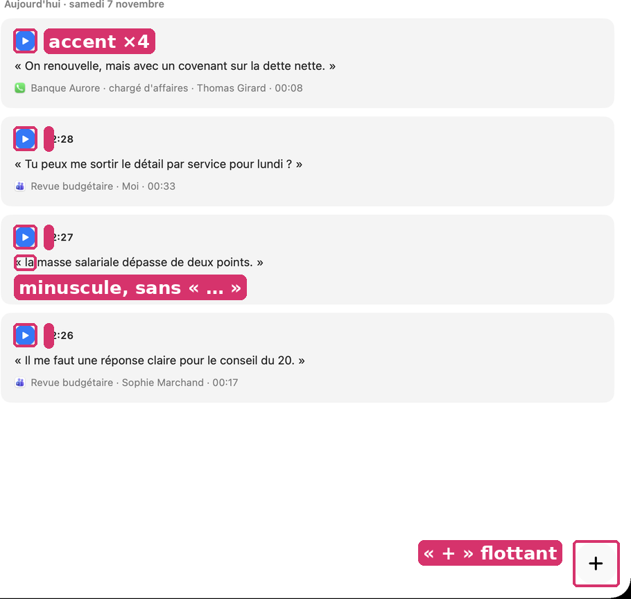
- Cause
NotesPane.swift:410-425(bouton flottant),:119,:225(PlayButtonaccent),:268("« \(n.excerpt.text) »", sans « … »).- Impact
- Chaque visite de Notes.
- Règle
- Notes (Mac) : « Nouvelle note » =
square.and.pencildans la barre ; Rappels : « + » dans la barre. Lexique des règles typographiques en usage à l'Imprimerie nationale : un extrait coupé se signale par des points de suspension. - Options
- OptionPourContre
square.and.pencildans la barre ; lecture enplay.circlesecondaire, accent au survol ; « … » devant un extrait coupéFamilier ; l'accent revient à ce qui joue—Garder le « + » flottantChoix fait, visibleIdiome Android - Choix
- Option 1.
- Spécification
Où Avant Après NotesPane.swift:410-425Image(systemName: "plus") 20 pt dans un rond de 46 flottantToolbarItem { Button("Nouvelle note", systemImage: "square.and.pencil") }NotesPane.swift:119, :225PlayButton(playing:, size: 26)PlayButton(…, style: .secondary) — accent quand playing ou au survolNotesPane.swift:268"« \(n.excerpt.text) »""«\u{202F}" + (n.excerpt.cut.start ? "…" : "") + texte + (n.excerpt.cut.end ? "…" : "") + "\u{202F}»"- Acceptation
- Plus de bouton flottant dans Notes.
- Un seul élément accent par carte au repos : aucun.
P35 · Visionneuse : trois fois « 15:48 », un fond gris rectangulaire, un lien souligné
DétailEffort : 45 minLot H · Notes et visionneuseLes captures d'un appel, en grand- Symptôme
- Chaque vignette porte « 15:48 », l'heure d'horloge, identique pour les trois. La capture en grand est posée sur un rectangle gris jusqu'aux bords. « 00:03 » est souligné comme un lien web.
- Preuve
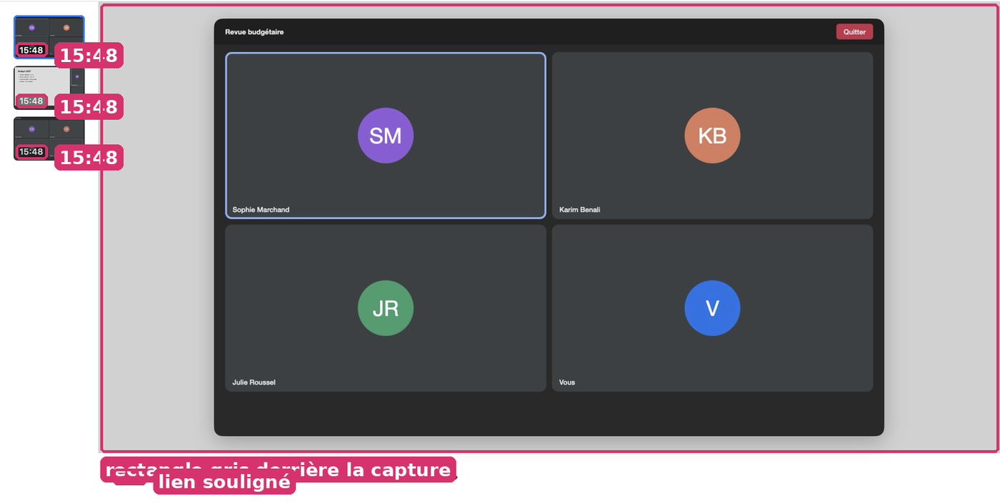
- Cause
CaptureViewer.swift:183(CaptureViewer.clock.string(from: shot.at)),:136(Color.black.opacity(0.18)),:224(.underline()).- Impact
- Chaque ouverture de la visionneuse.
- Règle
- DESIGN.md › Captures : « jamais de cadre rectangulaire, une ombre qui suit le contour » ; Photos : la photo sur le fond de la fenêtre. Liens : sur macOS, un lien dans une interface est en accent, sans soulignement (Réglages Système).
- Options
- OptionPourContreTemps dans l'appel (« 0:03 »), fond de fenêtre, accent sans soulignementDistingue les captures ; familier—
- Choix
- Option 1.
- Spécification
Où Avant Après CaptureViewer.swift:183CaptureViewer.clock.string(from: shot.at)TranscriptExport.clock(shot.at.timeIntervalSince(meta.start))CaptureViewer.swift:136.background(Color.black.opacity(0.18))(retiré)CaptureViewer.swift:224.underline().foregroundStyle(.tint)- Acceptation
- Deux captures prises à des moments différents ont des badges différents.